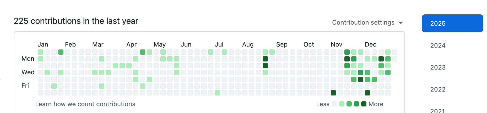
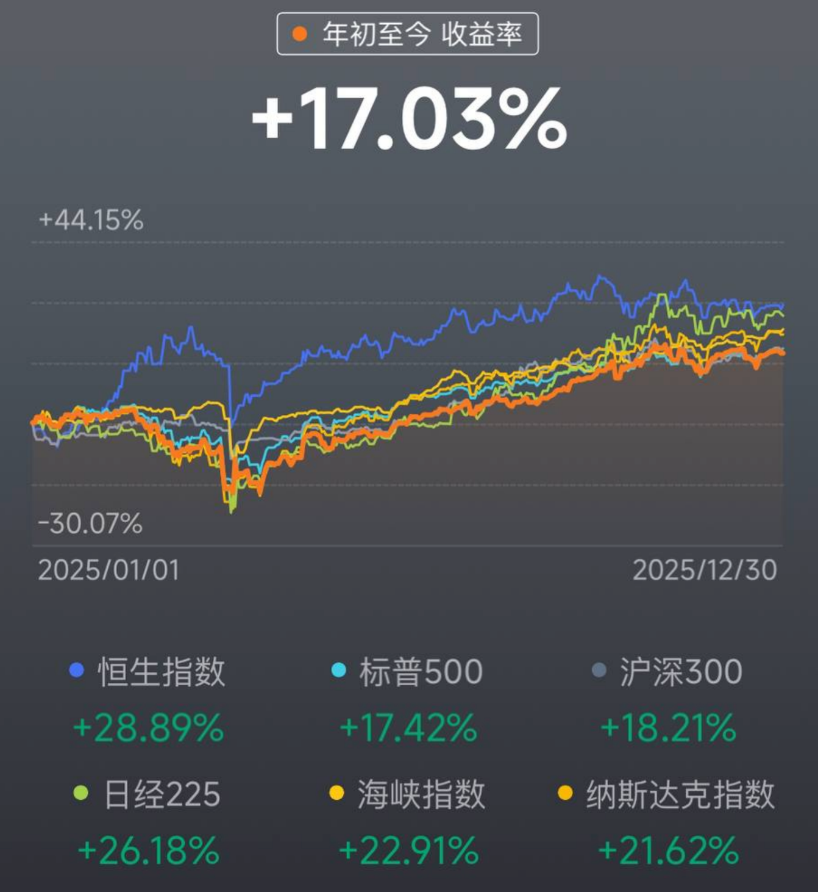
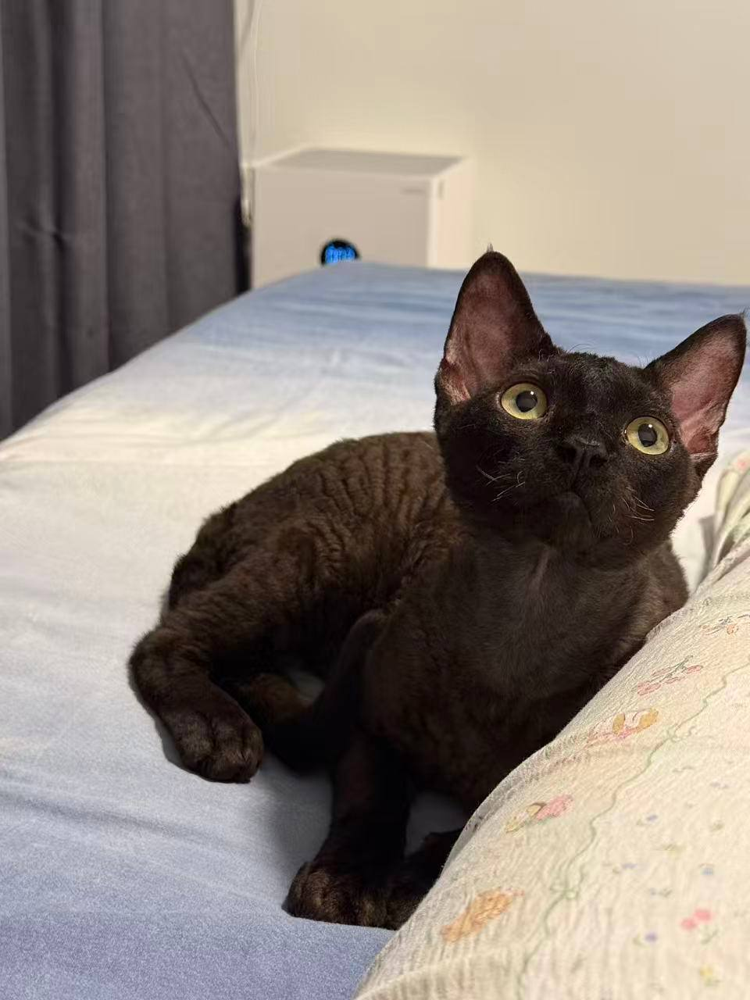
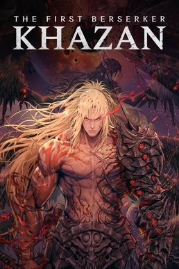
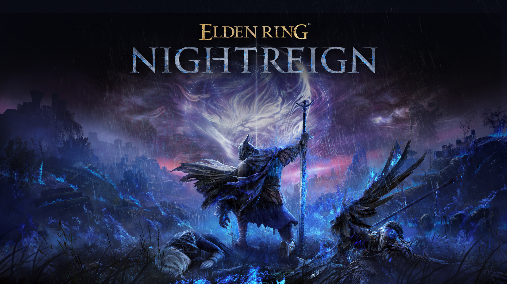
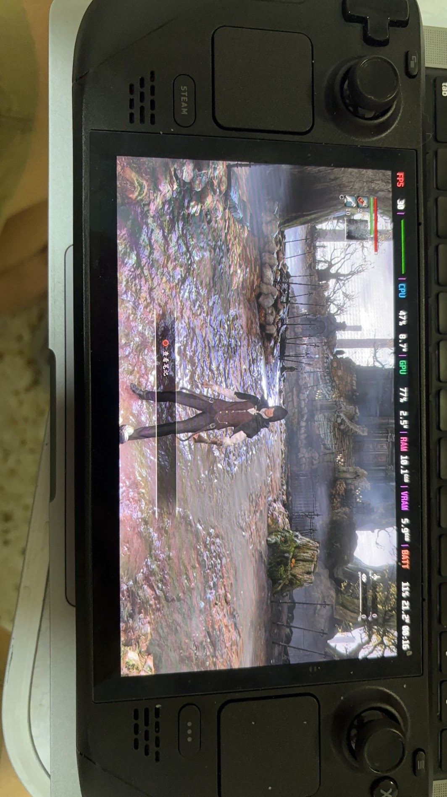
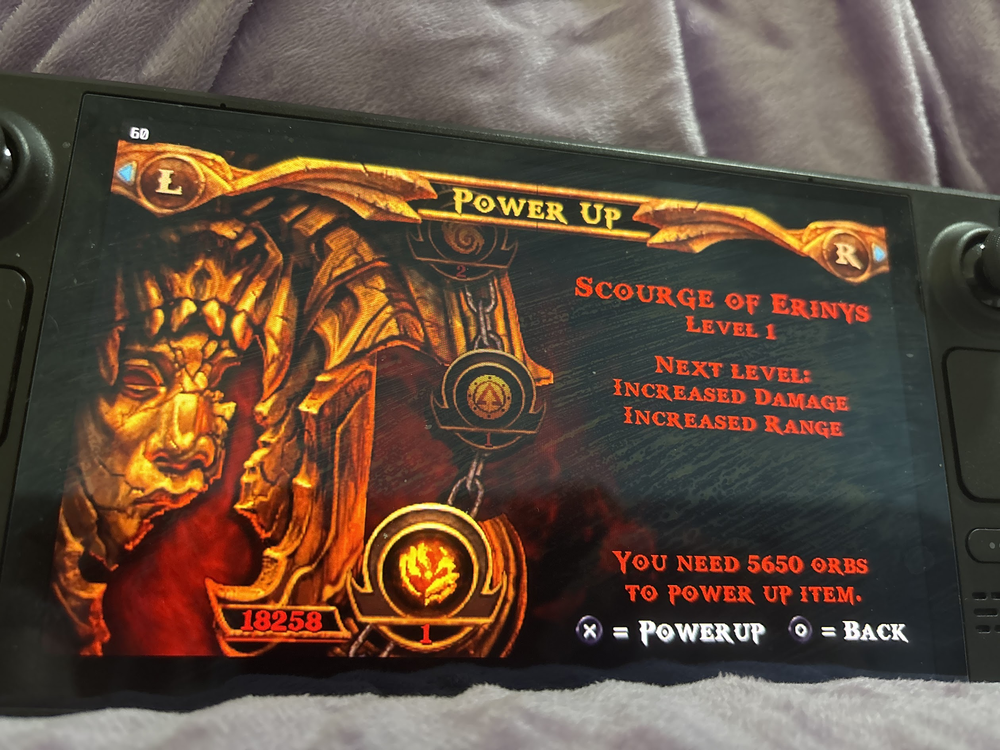
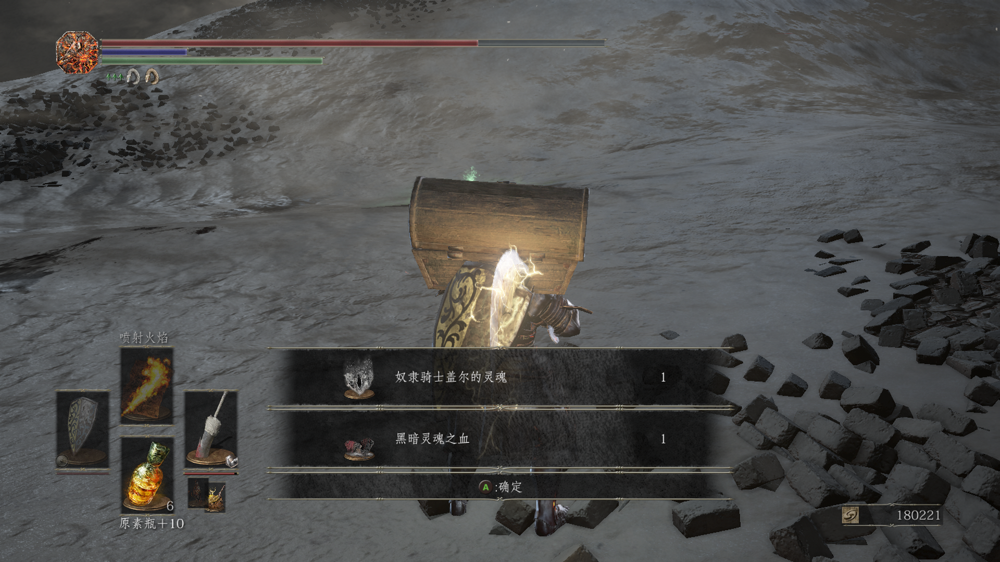
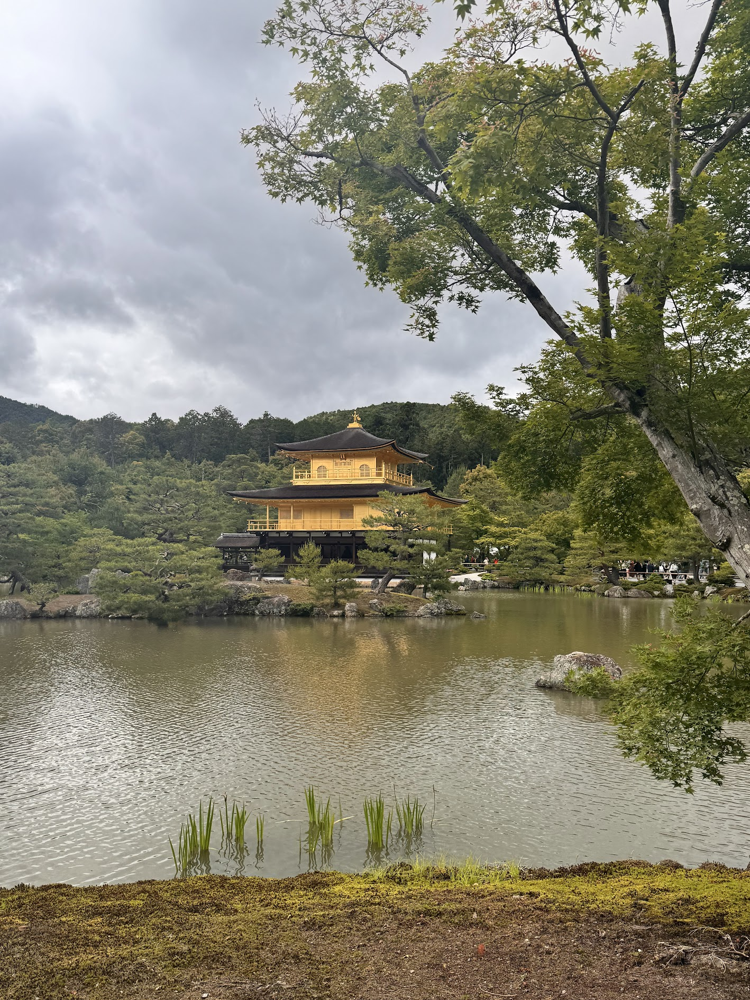

2025 Year-End Summary: Noise Reduction, Refactoring, and Long-termism
Contents
2025 Year-End Summary: Noise Reduction, Refactoring, and Long-termism
After Christmas comes New Year’s Day. I just tried to organize my thoughts verbally, but was interrupted halfway by the cat. After feeding it, I continued writing.
Standing at the tail end of 2025, looking back at this year, if last year was about “searching,” then this year was about “confirming.”
1. Work and Open Source: Embracing AI’s Duet
This year’s technical review can be summarized as: Working in a new environment, patching up in open source, and fully embracing AI.
K8s: Pain Points as Fulcrums In the first half of the year, I transferred to a new department, fully embracing Kubernetes. The depth of K8s is vast, but in daily work, I found many painful points in the process. As an engineer, enduring repetitive pain is more unbearable than writing code. So, I couldn’t resist and created a “wheel” internally to address these pain points.
Initially, it was just for my convenience, but colleagues in the group started trying it out. Instead of seeing it as “reinventing the wheel,” they began submitting PRs to the project. Watching the internal repository become active with commits, and everyone optimizing and discussing the same tool, this “internal open source small circle” atmosphere became the greatest source of accomplishment in my work this year—it gave meaning to the mundane work.
The Return of Air and the Support of AI

In terms of open source, I recently listened to a talk by Terry, who said, “Even if you’re busy, make at least one PR a day.” This sentence was like a hook, pulling me back to GitHub, forcing myself to pick up the maintenance work ofair again.
However, during maintenance, I also felt a deep sense of powerlessness. Often, after fixing a complex bug and happily submitting a PR, I found that the users who raised the issue didn’t care about how elegantly the code was written; they only cared about, “Does it work? Is the bug gone?”
Fortunately, AI became my new partner. At the beginning of the year, I started using Code Agent and AI Deep Search more intensively.
- Code Assistant: OpenAI’s Codex and Cloud Code became my right-hand tools.
- Deep Search: Whether it’s selecting products, buying things, checking technical documents, or finding restaurants, as long as I state my needs, AI can filter out the noise and provide direct answers. This gave me a new sense of control over life and work.
2. Investment: Rationality and Luck
17% Return: Didn’t Beat the Market
This year, the annualized return rate of my US stock account is around 15%-17%. Reflecting on entering the market in the second half of 2021, I experienced various fluctuations, with the worst being a 40% floating loss on a full position in QQQ. Fortunately, I always believed in the resilience of the US stock market, which is backed by solid technological productivity. I believe all the money that flows out of the US stock market will eventually return.

Current Holdings and Strategy Currently, I mainly hold SMH (semiconductors), QQQ (technology stocks), and SPY (S&P 500). To hedge risks, I also have a bit of gold. My investment philosophy is simple: If a stock rises 30% from the last time I sold it, I sell one-third of it. This is a discipline of forced profit-taking. Although I might miss out on some surges, I hope to always have cash (ammunition) on hand. In a market without price limits, having cash in hand keeps me calm, which is also a way to protect my mindset.
4. Friends: No Forced Integration, Only Resonance
Refusing to Force Integration In the past, I might have been anxious about whether to join a badminton club or force myself into local circles. This year, I completely figured it out: Never force integration. Any circle that requires you to disguise yourself to fit in is not worth entering.
Code is a Universal Language The new friends I made this year were all attracted by the “flavor” of technology, mainly in two categories: open source community and Vim/Neovim circle.
- Like-minded Friends: There’s a guy from China who is practically another version of me in the world. We have the same tech stack, the same aesthetics, and even use the same tools. When we meet, there’s no need for small talk; we directly recommend tools to each other, and that kind of tacit understanding is so satisfying.
- Local Friends: There’s a local Singaporean guy who emailed me about open source projects, and later we met at an offline Meetup. We hit it off and found that his passion for technology is exactly like mine.
- Also, I met colleagues from other departments on Twitter because of a rant about the bakery downstairs at the company.
5. Consumption and Life: Solve Pain Points, Not Create Demand
I didn’t buy much this year, but each purchase greatly improved my quality of life. The core logic is: Pay for pain points, not premiums.
- Robotic Vacuum Cleaner: I bought an older tech version (Ecovacs overseas counterpart). The reason is simple: domestic brands going overseas to Singapore have their prices doubled or tripled, and I refuse to be that sucker. I chose a mature older model, and although maintenance is a bit troublesome (like serving an old master), it indeed cleans the floor well, which is a victory for technology.
- Folding Bicycle: I got it based on a recommendation from a friend on Twitter. The evenings in Singapore are very cool, and the air after rain is fresh. Every day after work or on weekends, I ride it through the streets and alleys of Singapore, exploring corners that tourists would never visit. It’s not just a means of transportation but my “urban probe” and the best way to relieve boredom.
- Dryer: This is the greatest investment of the year. Previously, to save money, I manually hung clothes to dry, enduring it for two years, always watching the weather and battling humidity. After buying the dryer, although it uses some electricity, I no longer have to argue with my wife over the trivial matter of drying clothes. Spending money to avoid disaster is worth it.
- HHKB Keyboard: I brought it back from Japan. It was over 100 SGD cheaper than in Singapore. Awesome!
Laicai: The Healing Power of Black
A new resident has joined the family, a black Devon Rex cat named “Laicai.” This way, when I call my cat, I can sing the lyrics, “Laicai, come! Laicai, come!”

Initially, I was against having a cat, thinking it would be troublesome. But when this little guy snuggled into my bed on the first night and insisted on sleeping next to me every night thereafter, I was completely won over. It’s not just a pet; it’s family. In this world full of uncertainties, it provides the most certain emotional value.
6. 2025, The Golden Age for Gamers
This year, I spent more time on games than ever before, and it was thoroughly enjoyable.
- Hollow Knight: Silksong: This game is a “hand-eye coordination deterrent.” The mission guidance is very subtle, and if you wander around without thinking, it’s really exhausting. The difficulty is several levels higher than the first game. It’s no exaggeration to say that if you don’t use a controller macro, playing it manually is nearly impossible. But once you cross that threshold, it truly deserves the title of Game of the Year.
- First Berserker: Kazan: Possibly the most exhausting game I’ve played this year. Its blocking mechanism is reminiscent of “Sekiro,” with lenient judgment, but that doesn’t mean it’s easy—the initial difficulty was downright insane. I had to lower the difficulty to barely get past some bosses. The visual style is dark, and playing for long periods really strains the eyes, but it’s definitely a hardcore action game that challenges your limits.

- Elden Ring: Nightreign: Best Co-op Game of the Year. Played it with a childhood friend, and we had planned this before the game was released. This kind of tacit understanding doesn’t need much explanation. Although he’s not very skilled (laughs), I can carry him without taking damage. This game is the complete version of “Monster Hunter: Wilds,” offering a vast amount of content and top-notch combat experience and update frequency. The only regret is that the map is too large and time is too limited, so we can only explore a little at a time, feeling like we’ll never finish.

- Bloodborne (SteamDeck Emulator Version): Played on SteamDeck using the shadPS4 emulator. Although it experienced some frame drops and even crashes later on, I still consider it a masterpiece. The Lovecraftian oppressive atmosphere and the beasts of Yharnam are spot on. Ranked just behind “Sekiro,” it’s definitely my second favorite in the Souls series. Unfortunately, the emulator’s performance is limited, and I haven’t played the DLC yet. I’ll definitely complete it when I get a better device in the future.

- God of War (PSP Version): To make up for not being able to afford a PSP as a child, I installed an emulator on the SteamDeck and completed “Chains of Olympus” and “Ghost of Sparta” in one go. Games back then were so pure, with no fancy systems, just one word: satisfying.

- Elden Ring DLC: I left it halfway last year, but finished it by the end of the year. Elden Ring is indeed a work of art.
- Dark Souls 3 DLC: Also completed the Dark Souls 3 DLC. No need to say more, another masterpiece from FS Studio.

7. Travel: A Demystifying Journey to Japan
This year, I took a trip to Japan, visiting Tokyo, Osaka, Nara, Uji, and Kyoto, spending a total of 16-17 days there. In the latter part of the trip, I noticeably felt a bit of aesthetic fatigue from exploring the cities and just wanted to return to work in Singapore.

Of course, the service in Japan is truly excellent, which is probably why many locals in Singapore are eager to visit Japan—while in Singapore you can only buy products, in Japan, for the same price, you can get products plus top-notch service. However, I probably won’t go on such an in-depth tour again. After demystification, Japan seems more like a place to occasionally shop (buying HHKB, game discs) rather than a spiritual homeland. Future travels might lean towards more relaxing destinations.8. Identity: Not Achieved by Endurance, but by a Steady Journey
Obtaining Identity The biggest milestone in my life this year was obtaining Singaporean identity. I am very grateful to have seized this opportunity amidst the global rightward shift, settling in a relatively stable and safe place. The change in mindset is very straightforward: I am no longer anxious about job hunting, nor do I worry about being sent back home if I lose my job.
Noise Reduction and Complexity Obtaining identity also benefited from my previous efforts to reduce life’s complexity and simplify. I cut down on those periodic tasks that were necessary to maintain a certain state. I also bought some items to address specific pain points. Life doesn’t need all those fancy “must-haves”; simplicity is quite good. This way, life is more comfortable and simple, not so hard to endure until the clouds part and the moon shines through.
Philosophy on Immigration The moment I obtained identity, I suddenly realized a truth: Don’t rush immigration. If you’re staying in a place and it doesn’t feel too unbearable, not to the point of counting the days, then just stay. As long as time passes, and you live, pay taxes, and exist there, identity will eventually come naturally to you. When you stop anxiously counting the days for identity, it will inevitably come to fruition.
Health is Average Although I secured my identity, my health is average. Perhaps due to being busy at work, the cooling rainy season in the second half of the year, and taking a bit too much sick leave, catching colds became commonplace. The strength training I used to do three times a week gradually shrank to twice a week in the second half of the year due to being busy. Sometimes, I was too tired after training to even remember to drink protein shakes, and I didn’t manage my diet well.
 Flag for 2026: Ensure adequate protein intake and get back in shape.
Flag for 2026: Ensure adequate protein intake and get back in shape.
9. In Conclusion
Watching the tightening of domestic social platforms, I increasingly feel how important it is to have a personal space for free expression. I hope everyone reading this blog will be healthy, happy, and safe in 2026.
See you next year.
Author xiantang
LastMod 2026-01-04 (728b1162)